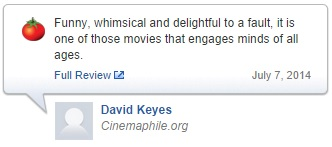
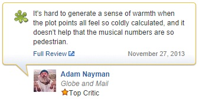

General advice for this homework:
- All functions should be case sensitive where applicable (particularly 2a, 2f).
- You might find some useful functions in the script util.py - have a look around in there before you start coding.
- The pencil icon means that your solution to the problem should appear with your written
work. The computer icon means that the problem requires you to edit the submission.py
script, but no written work is required. Both icons mean that the problem requires an entry with your written work
and it requires you to edit the submission.py script.
Problem 1: Warmup
Here are two reviews of "Frozen," courtesy of Rotten Tomatoes (no spoilers!):


Rotten Tomatoes has classified these reviews as "positive" and "negative," respectively, as indicated by the in-tact tomato
on the left and the splattered tomato on the right. In this assignment, you will create a simple text classification system
that can perform this task automatically.
We'll warm up with the following set of four mini-reviews, each labeled positive (+1) or negative (-1):
- (+1) pretty good
- (-1) bad plot
- (+1) not bad
- (+1) pretty scenery
Each review $x$ is mapped onto a feature vector $\phi(x)$,
which maps each word to the number of occurrences of that word in the review.
For example, the first review maps to the (sparse) feature vector $\phi(x) = \{\text{pretty}:1, \text{good}:1\}$.
Recall the definition of the hinge loss:
$$\text{Loss}_{\text{hinge}}(x, y, \mathbb{w}) = \max \{0, 1 - \mathbb{w} \cdot \phi(x) y\},$$
where $y$ is the correct label.
- Suppose we run stochastic gradient descent, updating the weights according to
$$\mathbb{w} \leftarrow \mathbb{w} - \eta \nabla_\mathbb{w} \text{Loss}_{\text{hinge}}(x, y, \mathbb{w}),$$
once for each of the four examples in order.
After the classifier is trained on the given four data points, what are the weights of the six words ('pretty', 'good', 'bad',
'plot', 'not', 'scenery') that appear in the above reviews? Use $\eta = 1$ as the step size.
-
Create a small labeled dataset of four mini-reviews using the words 'not', 'good', and 'bad',
where the labels make intuitive sense.
Each review should contain one or two words, and no repeated words.
Prove that no linear classifier using word features can get zero error on your dataset.
Then propose a single additional feature that we could augment the feature vector with that would fix this problem.
(Hint: think about the linear effect that each feature has on the classification score.)
-
Now let us move beyond binary classification and consider the problem of ranking reviews.
Each input is now a set of reviews $\{x_1, \dots, x_m\}$ and the output $k$ indices $I \subset \{1,\dots,m\}$
which corresponds to the $k$ most relevant reviews.
Assume we have a feature vector $\phi(x)$ for each review.
Define a loss function $$\text{Loss}(\mathbb{w}, \{x_1, \dots, x_m\}, I)$$
that takes the input $\{x_1, \dots, x_m\}$,
a set of selected reviews $I$ (with $|I| = k$),
and a weight vector $\mathbb{w}$.
Your loss function should generalize the hinge loss for binary classification in the following sense:
To pay zero loss, your linear classifier (on the current value of $\mathbb{w}$) should rank every review in $I$ higher than all other reviews not in $I$ by a margin of $1$;
otherwise, you pay a linear cost for violation. The ranking of items within $I$ and outside of $I$ are not important.
Each review in $I$ can only contribute to the loss once, even if it is beaten by many reviews outside of $I$.
For example, if we have reviews (A, B, C, D, E) with scores 2, 5, 5, 1, 4, respectively, and selected reviews A and B.
Then the loss is $[1-(2-5)] + [1-(5-5)] = 5$ (there are two violations).
You must simplify your expression so only one $\max$ appears.
Problem 2: Sentiment Classification

In this problem, we will build a binary linear classifier that reads movie reviews and guesses whether they are
"positive" or "negative."
- Implement the function
extractWordFeatures, which takes a review (string) as input and returns a feature vector
$\phi(x)$ (you should implement the vector $\phi$ as a dict in Python).
- Implement the function
learnPredictor using stochastic gradient descent, minimizing
the hinge loss.
Have your function print the training error and test error after each iteration through the data.
You must get less than 8% error rate on the training set to get full credit.
We will evaluate your code on a hidden test set; you must get less than 30% error rate to get full credit.
The next two parts will help you accomplish this.
- Create a test case for your
learnPredictor function by writing the generateExample
function (nested in the generateDataset function).
Use this to double check that your learnPredictor works!
- Run your linear predictor on the sentiment dataset with the
extractWordFeatures feature
function. Tune the numIters and step size eta
hyperparameters to produce the smallest test error you can. Report the
values you choose and report the training and test error after each round.
Don't increase numIters above 20.
-
When you run the grader.py on test case
2b-1, it should output a weights
file and a error-analysis file.
Look through 10 example incorrect predictions and for each one,
give a one-sentence explanation of why the classification was incorrect.
What information would the classifier need to get these correct?
In some sense, there's not one correct answer, so don't overthink this problem;
the main point is to get you to get intuition about the problem.
-
Now we will try a crazier feature extractor. Some languages are written without spaces between words.
But is this step really necessary, or can we just naively consider strings of characters that stretch across words?
Implement the function
extractCharacterFeatures
(by filling in the extract function), which maps each string of $n$ characters
to the number of times it occurs, ignoring whitespace (spaces and tabs).
- Run your linear predictor with feature extractor
extractCharacterFeatures. Experiment
with different values of $n$ to see which one produces the smallest test error. You should observe that this error is
nearly as small as that produced by
word features. How do you explain this? Construct a review (one sentence max) in which character $n$-grams
probably outperform word features, and briefly explain why this is so.
- OPTIONAL EXTRA CREDIT: implement
extractExtraCreditFeatures with any feature extractor you like.
The ten feature extractors that produce the most accurate classifiers (lowest test error) will be awarded descending amounts of
extra credit. To get credit, you must clearly describe your feature extractor and why you think it's better. The evaluation
will take place on a hidden dataset of reviews.
Problem 3: K-means clustering
Suppose we have a feature extractor $\phi$ that produces 2-dimensional feature
vectors, and a toy dataset $\mathcal D_\text{train} = \{x_1, x_2, x_3, x_4\}$ with
- $\phi(x_1) = [1, 0]$
- $\phi(x_2) = [2, 1]$
- $\phi(x_3) = [0, 0]$
- $\phi(x_4) = [0, 2]$
-
Run 2-means on this dataset. What are the final cluster assignments $z$ and cluster centers $\mu$?
Run this algorithm twice, with initial centers:
- $\mu_1 = [0, -1]$ and $\mu_2 = [2, 2]$
- $\mu_1 = [2, 0]$ and $\mu_2 = [-1, 0]$
-
Implement the
kmeans function. You should initialize your $k$
cluster centers to random elements of examples.
After a few iterations of k-means, your centers will be very dense vectors. If your code is taking too long to terminate,
make sure you perform any necessary precomputations.
NOTE: a bug in the grader script for this problem was recently fixed (Monday 10/6). You can redownload the grader script.
Meanwhile, if you get answers that are very very close but not exactly correct, you're fine.
-
Sometimes, we have prior knowledge about which points should belong in the same cluster.
Suppose we are given a set $S$ of example pairs
$(i,j)$ which must be assigned to the same cluster. Provide the modified k-means algorithm
that performs alternating minimization on the reconstruction loss.